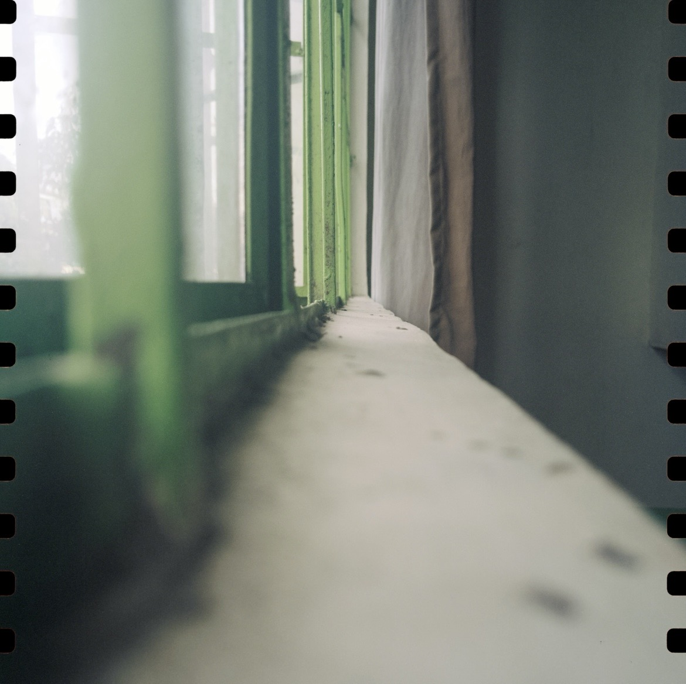
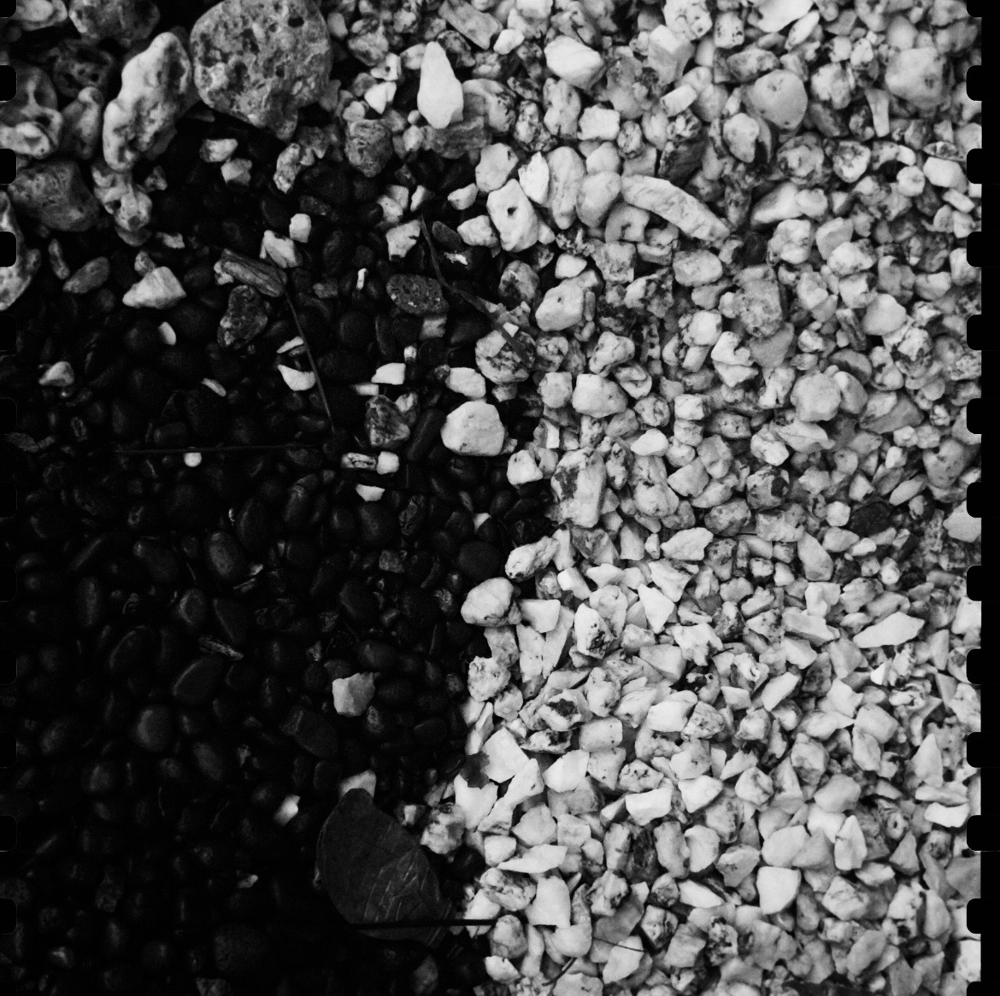
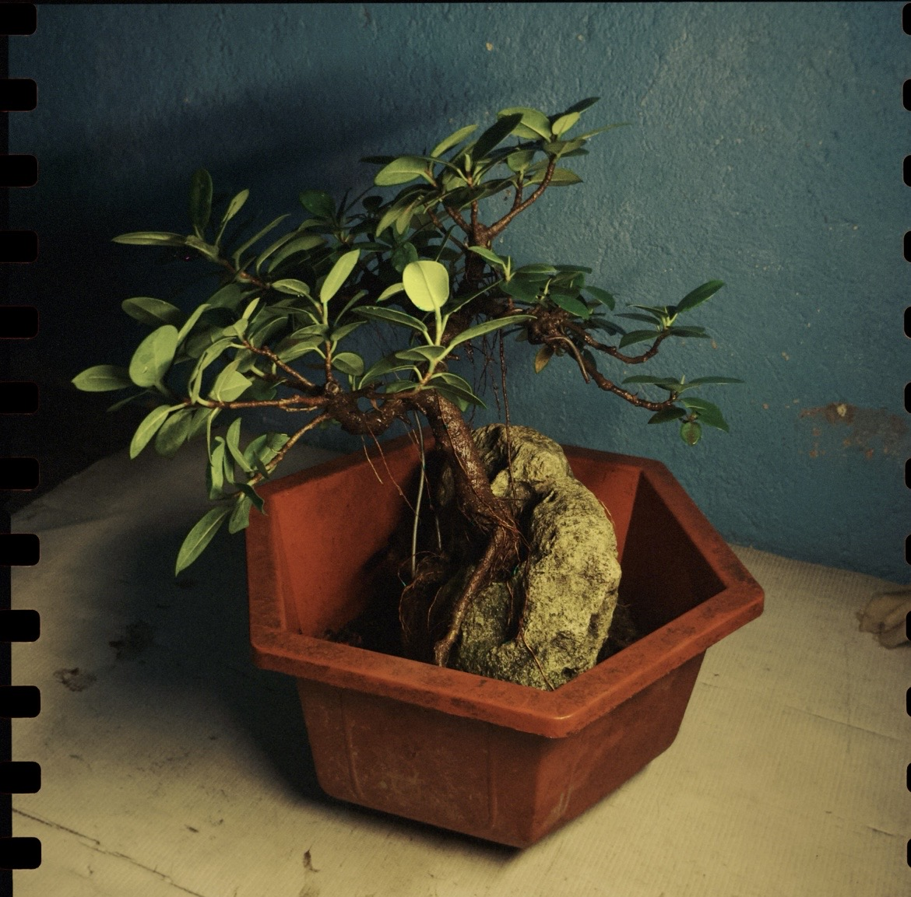
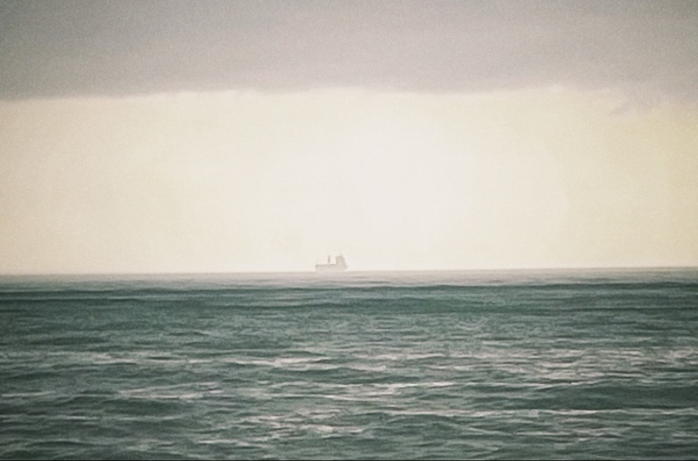
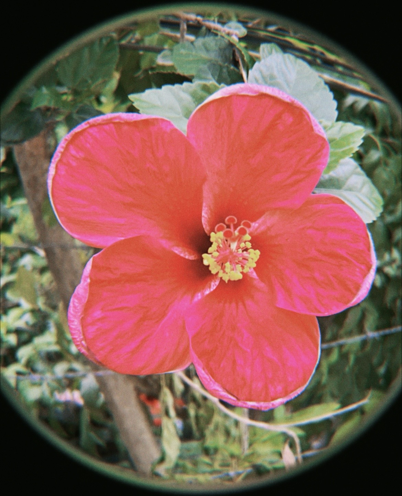
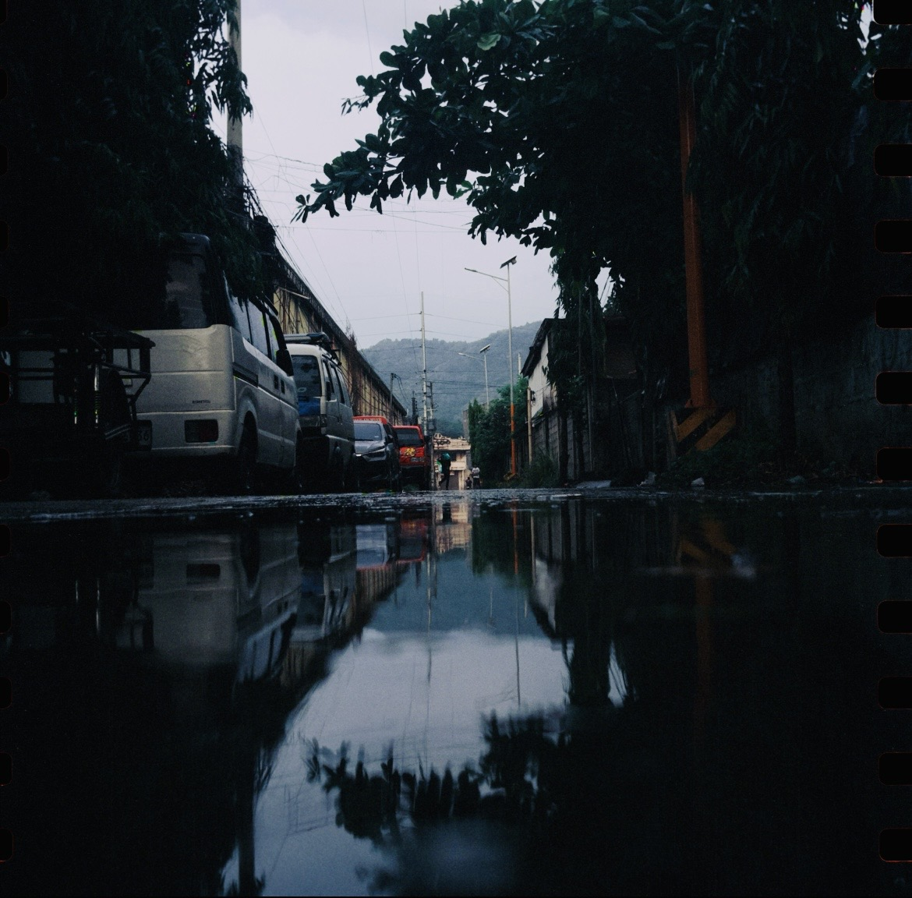
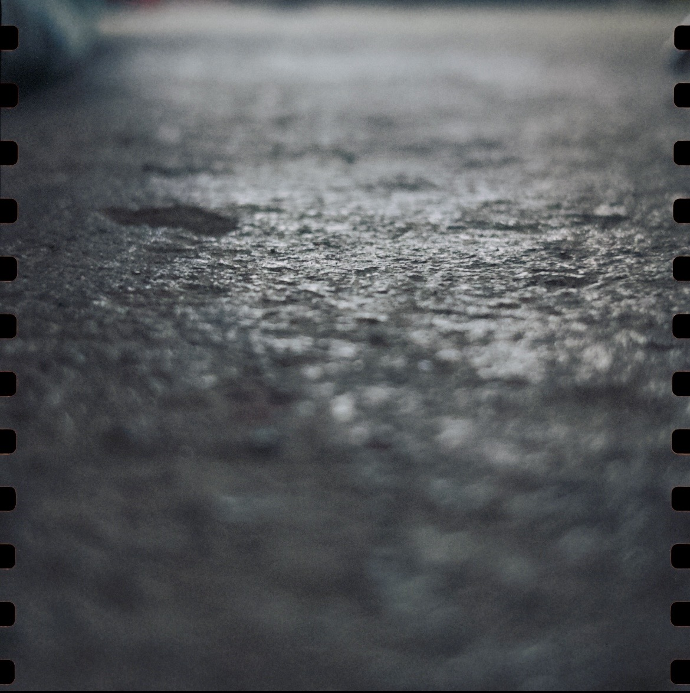

A visual study
Line · Shape · Form · Space · Color · Value · Texture

The path of a moving point. Lines define edges, suggest movement, and guide the eye — sweeping diagonals and curves converging on a single subject, carved into relief by a hard key light raking across raw concrete. They are the most fundamental mark an artist can make.

A two-dimensional area defined by edges or a change in value and color. Shapes are either geometric — precise and mathematical — or organic, free and natural.

Shape given volume and depth — three-dimensional, or the illusion of it. Light and shadow transform a flat shape into a form with mass and presence.

The area around, between, within, and beyond objects. Positive space is occupied; negative space breathes. Together they create balance, tension, and depth.

Light reflected off surfaces, described by hue, value, and saturation. Color evokes emotion, sets mood, and creates harmony — or deliberate tension.

The lightness or darkness of a color. Value creates contrast, reveals form, and determines the overall mood — from stark drama to subtle whisper.

The surface quality of an object — rough, smooth, soft, coarse. In art, texture can be tactile (real) or visual (implied through technique).